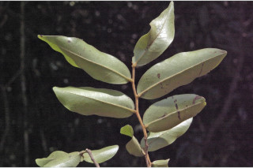
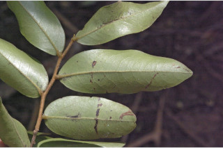
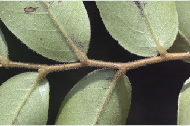
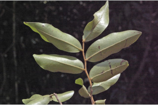
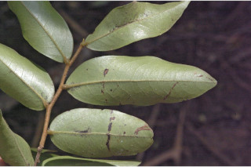
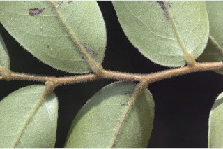
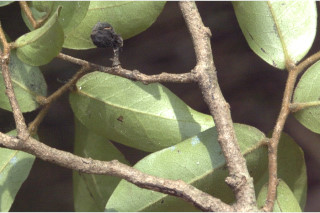
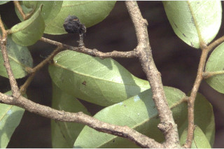

Shrubs, 2-4 m tall, much branched.
ಹೆಚ್ಚು ಕವಲುಗಳ ಸಹಿತವಾದ, 3 ರಿಂದ 4 ಮೀ ಎತ್ತರದವರೆಗೂ ಬೆಳೆಯುವ ಪೊದೆಗಳು.
2 മുതല് 4 മീറ്റര് വരെ ഉയരമുള്ളതും, ഏറെ ശിഖരങ്ങളോടു കൂടിയതുമായ കുറ്റിച്ചെടി.
குத்துச்செடி, 2-4 மீ. உயரம் வளரக்கூடியது, அடர்த்தியான பல கிளைகளுடையது.
Terete, strigose.
ಕವಲುಗಳು ಮತ್ತು ಕಿರುಕೊಂಬೆಗಳು ದುಂಡಾಕಾರದಲ್ಲಿದ್ದು ಬಿರುಗೂದಲು ಸಹಿತವಾಗಿರುತ್ತವೆ.
പരുത്ത കുറ്റിരോമങ്ങള് നിറഞ്ഞതും. ഉരുതുമായ ശാഖകളും ഉപശാഖകളും.
சிறிய நுனிக்கிளைகள் குறுக்குவெட்டுத் தோற்றத்தில் வளையமானது, உரோமங்களுடையது.
Leaves simple, alternate, distichous; petioles 0.1- 0.2 cm long, tomentose; lamina 4.5-9 x 2.4-2.8 cm, ovate-oblong to elliptic-oblong, apex obtusely acuminate, base rounded, pubescent on both surfaces when young; secondary_nerves 10-12 pairs, slender; tertiary_nerves reticulate.
ಎಲೆಗಳು ಸರಳ, ಪರ್ಯಾಯ ಜೋಡನಾ ವ್ಯವಸ್ಥೆಯಲ್ಲಿದ್ದು, ಕಾಂಡದ ಎರಡೂ ಕಡೆ ಎದುರು ಬದರಿನ ಲಂಬಸಾಲಿನಲ್ಲಿರುತ್ತವೆ.; ಎಲೆ ತೊಟ್ಟುಗಳು 0.1 ರಿಂದ 0.2ಸೆಂ.ಮೀ. ಉದ್ದ ಹಾಗೂ ದಟ್ಟ ಮೃದುತುಪ್ಪಳ ಸಹಿತವಾಗಿರುತ್ತದೆ. ಎಲೆ ಪತ್ರ 4.5-9 × 2.4-2.8ಸೆಂ.ಮೀ. ಗಾತ್ರ ಅಂಡ ಚತುರಸ್ರಾಕಾರದಿಂದ ಅಂಡವೃತ್ತ-ಚತುರಸ್ರಾಕಾರದ ಆಕಾರ ಹೊಂದಿದ್ದು, ಮೊಂಡಾದ ಅಗ್ರವನ್ನುಳ್ಳ ಕ್ರಮೇಣ ಚೂಪಾಗುವ ತುದಿ, ಗುಂಡಾಕಾರದ ಬುಡವನ್ನು ಹೊಂದಿರುತ್ತದೆ; ಎಳೆಯ ಎಲೆಗಳು ಮೇಲ್ಭಾಗ ಮತ್ತು ತಳಭಾಗ ಮೃದುತುಪ್ಪಳ ಸಹಿತವಾಗಿರುತ್ತವೆ; ಎರಡನೇ ದರ್ಜೆಯ ನಾಳಗಳು 10 ರಿಂದ 12 ಜೋಡಿಗಳಿದ್ದು ತೆಳುವಾಗಿರುತ್ತವೆ; ತೃತೀಯ ದರ್ಜೆಯ ನಾಳಗಳು ಜಾಲಬಂಧ ನಾಳ ವಿನ್ಯಾದಲ್ಲಿರುತ್ತವೆ.
ലഘുവായ ഇലകള്, ഏകാന്തര ക്രമത്തില്, തണ്ടിന്റെ ഇരുഭാഗത്തു മാത്രമായി അടുക്കിയിരിക്കുന്നു; കനത്ത രോമാവൃതമായ ഇലഞെട്ടിന് 0.1 മുതല് 0.2 സെമീ വരെ നീളം; പത്രഫലകത്തിന് 4.5 മുതല് 9 സെ.മീ. വരെ നീളവും 2.4 മുതല് 2.8 സെ.മീ. വരെ വീതിയും, ആകൃതി അണ്ഡാകാര-ദീര്ഘായതാകാരം മുതല് ദീര്ഘവൃത്തീയ-ദീര്ഘായതാകാരം വരെയും, പത്രാഗ്രം മുനപ്പില്ലാത്ത ചെറുവാലോടുകൂടിയും, പത്രാധാരം വൃത്താകാരത്തിലുമാണ്, ഇളതായിരിക്കുമ്പോള് ഇരുഭാഗത്തും രോമാവൃതമാണ്; നേര്ത്ത ദ്വിതീയ ഞരമ്പുകള് 10 മുതല് 12 വരെ ജോഡികളാണ്; ജാലികാവിന്യാസം തീര്ക്കുന്ന ത്രിതീയ ഞരമ്പുകള്.
இலைகள் தனித்தவை, மாற்றுஅடுக்கமானவை, இருநெடுக்கு வரிசையிலையடுக்கம் (டைஸ்டிக்கஸ்); இலைக்காம்பு 0.1-0.2 செ.மீ. நீளம், மெல்லிய உரோமங்களுடையது; இலை அலகு 4.5-9 X 2.4-2.8 செ.மீ., முட்டை-நீள்சதுர வடிவம் முதல் நீள்வட்டம்-நீள்சதுரம், அலகின் நுனி அதிக்கூரியது மற்றும் முனை மழுங்கியது, அலகின் தளம் வட்டமானது, புதிதாகத் தோன்றிய இலையின் இருபரப்பிலும் உரோமங்களுடையது; இரண்டாம் நிலை நரம்புகள் 10-12 ஜோடிகள், மெலிதானது; மூன்றாம் நிலை நரம்புகள் வலைப்பின்னல் அமைப்பு கொண்டது.
Flowers solitary, axillary, greenish pink.
ಹೂಗಳು ನಸುಗೆಂಪು ಬಣ್ಣ ಹೊಂದಿದ್ದು ಅಕ್ಷಾಕಂಕುಳಿನಲ್ಲಿ ಒಂಟಿಯಾಗಿರುತ್ತವೆ.
കക്ഷങ്ങളില് ഒറ്റക്കായുാകുന്ന പൂക്കള്ക്ക് പച്ച കലര്ന്ന പിങ്ക് നിറം.
மலர்கள் தனியானது, இலைக்கோணங்களில் அமைந்தவை, பச்சை நிறம் கலந்த பிங்க்.
Clustered 1-seeded berries, obliquely ellipsoid or oblong, short-stalked or sessile, apiculate, pubescent.
ಎಲೆಬೀಜಸಹಿತವಾದ ಬೆರ್ರಿಗಳು ಗೊಂಚಲಿನಲ್ಲಿರುತ್ತವೆ. ಬೆರ್ರಿಗಳು ಓರೆಯಾದ ಅಂಡವೃತ್ತ ಅಥವಾ ಧೀರ್ಘ ಚತುರಸ್ರಾಕಾರದಲ್ಲಿದ್ದು ; ಬೆರ್ರಿಗಳು ಸಣ್ಣತೊಟ್ಟು ಸಮೇತ ಅಥವಾ ತೊಟ್ಟುರಹಿತವಾಗಿದ್ದು, ತುದಿಯಲ್ಲಿ ಸೂಕ್ಷ್ಮವಾದ ಮೊನಚನ್ನು ಹೊಂದಿದ್ದು, ಮೃದುತುಪ್ಪಳ ಸಮೇತವಿರುತ್ತದೆ.
ഒറ്റ വിത്തോടുകൂടിയ, അറ്റത്തൊരു മുനപ്പുള്ള, ചരിഞ്ഞ ദീര്ഘ ഗോളാകാരമോ ദീര്ഘായതാകാരമോ ആയ, അവൃന്തമോ ചെറുഞെട്ടോടു കൂടിയതോ ആയ സരസഫലങ്ങള് കൂട്ടമായുണ്ടാകുന്നു.
கொத்தான ஒரு விதையுள்ள முழுச்சதைகனி (பெர்ரி), சமச்சீரற்ற நீள்வட்டம் அல்லது நீள்சதுரம், சிறிய காம்பு அல்லது காம்பற்றது, அலகுடையது, உரோமங்களுடையது.
 






 
